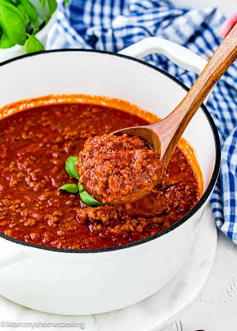

Italian Cuisine
Bolognese
A rich and hearty meat sauce perfect for pasta.

Instructions
- Make the dough: In a large bowl, combine the flour, yeast, sugar, salt, and baking powder.
- Add the yogurt, warm water, and oil. Mix until a shaggy dough forms.
- Knead for about 5–7 minutes until the dough becomes smooth and elastic. If it's sticky, add flour 1 tablespoon at a time. If it's too dry, add water 1 tablespoon at a time.
- You want a soft dough that is slightly tacky but not sticking heavily to your hands.
- Let it rise: Put the dough in a lightly oiled bowl and cover it. Let it sit somewhere warm for about 60–90 minutes, until roughly doubled in size.
- Divide: Punch the dough down and divide it into 6 equal pieces.
- Roll each piece into a ball and let them rest for another 10 minutes.
- Shape the naan: Roll each ball into an oval about ⅛-inch thick. Don't worry about making them perfectly shaped. The irregular edges are part of the appeal.
- For garlic naan, press a little minced garlic and cilantro into one side of the dough.
- Cook in a very hot pan: Heat a cast-iron skillet or heavy stainless-steel pan over medium-high to high heat. You want the pan very hot before the first naan goes in.
- Place the naan garlic-side down if you've added garlic.
- Cook for about 60–90 seconds, until bubbles form and the bottom develops dark brown or charred spots.
- Flip and cook another 30–60 seconds. You want some nice blistering and char without drying the naan out.
- Finish: Brush immediately with a little olive oil and sprinkle with cilantro and a tiny pinch of salt.